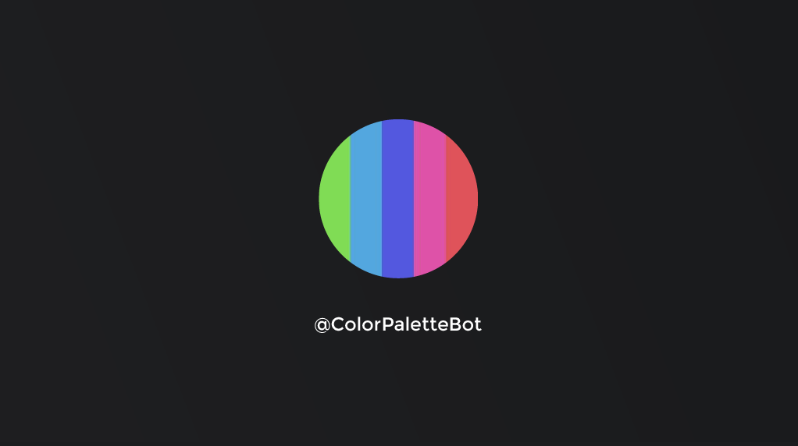

Research | Code Prototyping | Implementation & Usability Testing
I wanted to make a minimalist tool for generating color palettes. I wanted to ensure that it not fall into the trappings of other Twitter bots. Instead of just vomiting data out into the aether, I wanted users to interact with it.
One example that piqued my interest was Color Schemer. Every hour, it tweets a color palette and assigns creative names to each color in the palette. In my opinion it's the perfect art-project bot. I wanted to make something more stripped down and usable, so my design priorities were different for my bot. It was important to me that the user could copy the color values and paste them into a color editor.
I wanted my users to be able to interact with the bot directly. They should be able to stay in Twitter and just tweet at it to recieve a new color palette. Ultimately, I decided that if they tweet a color at the bot, it should generate a palette that includes the color they tweeted. At its most basic, the inputs and outputs of the bot are as follows:
The core of the bot is its ability to generate color harmonies, so the first thing I did was work on coding a variety of those. All the examples I found worked by taking a default color and making alterations to the hue, saturation, and value to create new colors in the harmony. I was able to build my own color harmony algorithms in Python that took an HSV color and returned a list of HSV values that represented a harmony. Since I wanted my interface to be RGB, I wrote utility functions to convert between the two. I used the matplotlib graphing library to make the bands of color for the bot's images.
I tested my bot in the command line, generating many color palettes and tweaking the algorithms until they yielded attractive color harmonies. Many of the harmonies took the starting hue of the input color and manipulated it in interesting ways. Below are some examples of color harmonies that could be created for #41D3BD.
Building a bot around my small library of color harmony generators ended up being fairly easy. The only difficult part was making sure that many different kinds of user input could be parsed and responded to by the bot. I didn't want the user to input what they thought was a valid color code and then have it get rejected by the bot.
I ran usability testing with a small group of my peers to see what kinds of color codes they might use with the bots. Some used six-digit RGB codes and some used abbreviated three-digit RGB codes. Some used a '#' in front of their numbers, some used '0x', which is a common notation in many programming languages, and some used nothing. Many used simple colors names like red.
There were two cases that surprised me that I wouldn't have discovered without usability testing. First, people often didn't know which color they wanted to use as a starting point for the color generation. Second, users sometimes used a greyscale value that didn't produce interesting color harmonies because they had no hue value to manipulate. I was able to change how my bot handles these two cases to ensure that these types of users could still get interesting color harmonies. Without usability testing, I would never have discovered these issues on my own.
You can generate your own color palettes by tweeting @ColorPaletteBot. Please note that a bot cannot see your mentions if you have a private account.